Club de kayak · Querétaro
La presate espera.
Rema. Respira. Desconéctate.
A 17 minutos de Querétaro.
Capítulo 01 · El club
Un club para todas las edades.
Agua tranquila entre montañas y pelícanos. El lugar exacto para soltar la prisa de la ciudad y volver a respirar hondo —sea tu primera palada o tu travesía número cien.
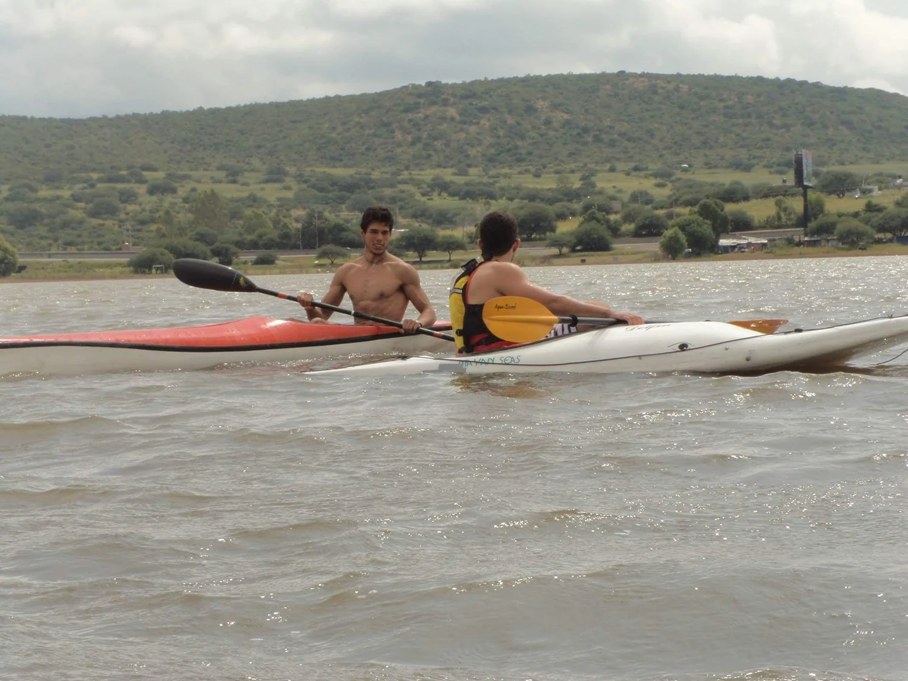
Capítulo 02 · Hecho aquí
Aquí no solo remamos: los fabricamos.
Cada kayak de nuestra flota nace en el taller del club, bajo la marca Mayan Seas. Diseñados y construidos a mano —de mar, travesía y competición— en fibra de carbono y fibra de vidrio. Cuando remas aquí, remas en equipo de verdad.
- Diseño y fabricación propia · marca Mayan Seas
- De kayaks de mar a K1 de competición
- Fibra de carbono y fibra de vidrio, hechos a mano
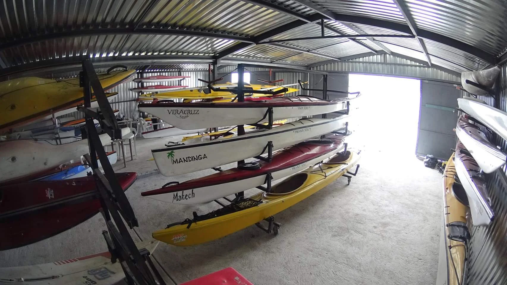
Capítulo 03 · Aprende a remar
Tu primera palada, bien dada.
Clases e instrucción para empezar de cero o pulir tu técnica. En una sesión ya te deslizas solo sobre el agua.
- Instructor certificado y grupos pequeños
- Equipo y chaleco salvavidas incluidos
- Desde niños hasta adultos mayores
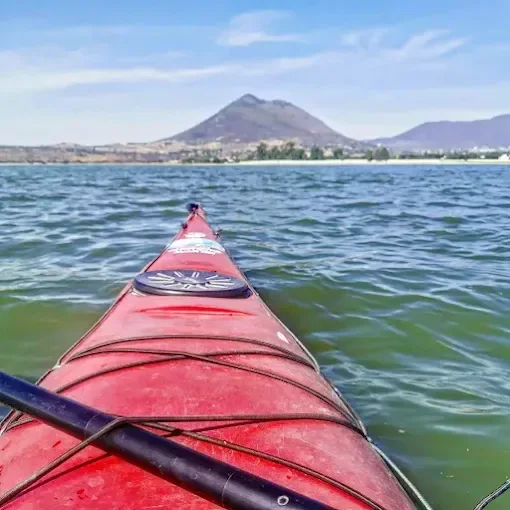
Capítulo 04 · Renta tu kayak
Sal por tu cuenta. El agua es tuya.
¿Ya sabes remar? Renta por hora y arma tu propia salida. Bordea la orilla, busca a los pelícanos o cruza hacia el reflejo del cerro.
- Kayaks individuales y dobles, canoas y paddleboard (SUP)
- ¿Vienes en familia? También hay bicicletas acuáticas
- Chaleco y remo incluidos · renta por hora
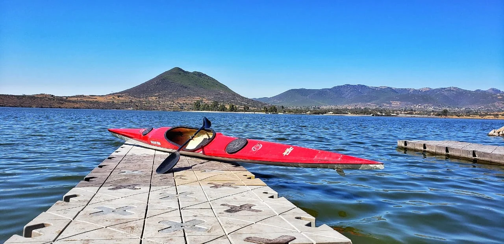
Capítulo 05 · Servicios y precios
Elige tu forma de remar.
Kayak sencillo o tabla de SUP. Chaleco y remo incluidos.
ReservarAcceso de comunidad, individual o familiar. Tu lugar en el club.
Quiero mi membresíaTambién en renta por hora: paddle board (SUP) · canoas · bicicletas acuáticas para toda la familia.
Precios de referencia · confírmalos al momento por WhatsApp.
Capítulo 06 · Travesías, eventos y lunadas
Reúne a los tuyos sobre el agua.
Salidas grupales, regatas y eventos a la medida: cumpleaños o integración de empresa. Pero lo mejor pasa cuando baja el sol —quédate al atardecer, arma una lunada junto al agua o acampa bajo las estrellas.
- Travesías guiadas al amanecer y al atardecer
- Lunadas y noches de campamento junto a la presa
- Regatas, cumpleaños e integración de empresa · palapa para tu evento
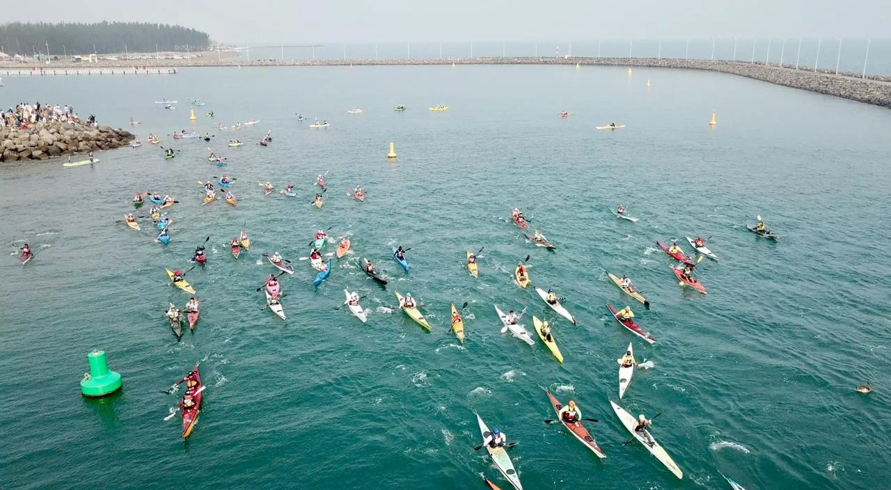
Capítulo 07 · Pet friendly
Trae a tu mejor amigo.
Aquí las mascotas también reman. Sube a tu perro con su chaleco y déjalo descubrir la presa contigo: agua tranquila, orilla para corretear y todo el espacio para mover la cola.
- Kayaks estables, ideales para remar con tu perro
- Chalecos salvavidas también para tu mascota
- Áreas verdes y orilla para que jueguen
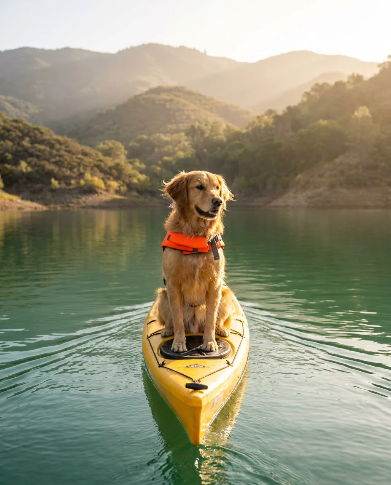
Capítulo 08 · Comunidad
Gente real, agua real.
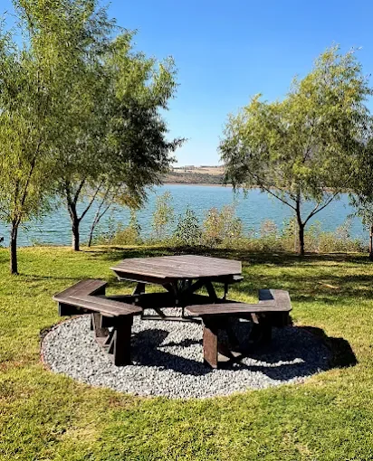
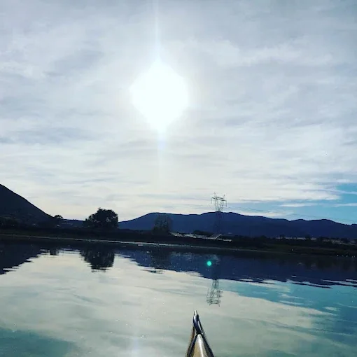
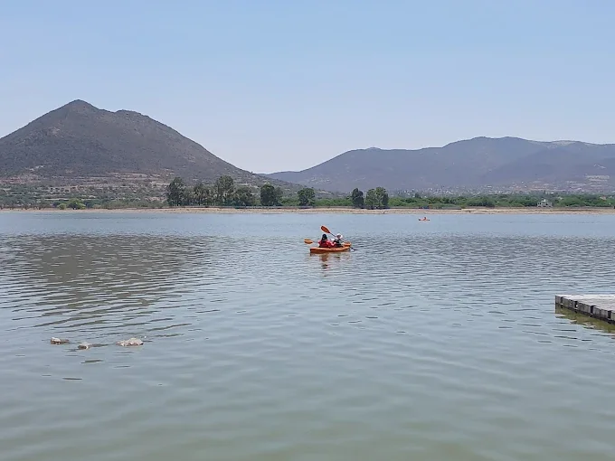
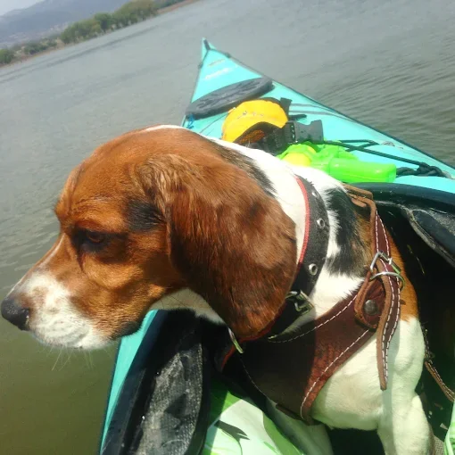
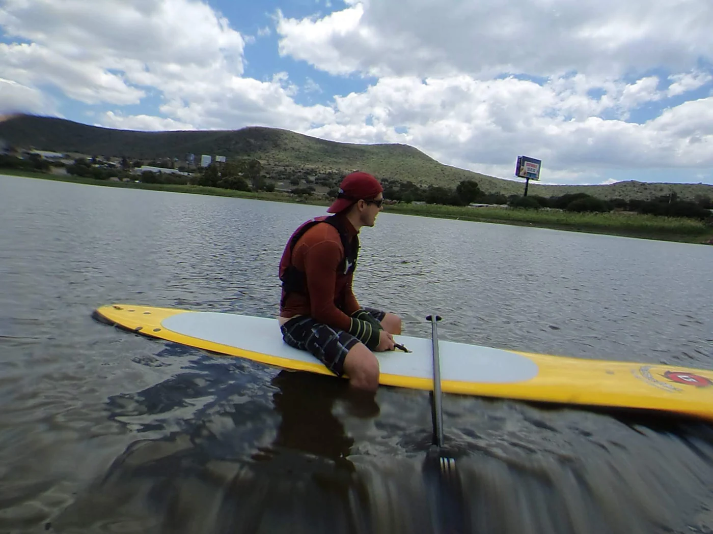
Capítulo 09 · Cómo llegar
A 17 minutos de la ciudad.
- UBICACIÓNPaseo Presa de Santa Catarina · Santa Rosa Jáuregui, Qro.
- HORARIOTodos los días · L–V 8:00–19:00 · S–D 9:00–16:00
- DESDE QRO≈ 17 min en auto
- Vestidores y baños
- Palapa para eventos
- Zona de camping
- Pista para correr
- Estacionamiento amplio
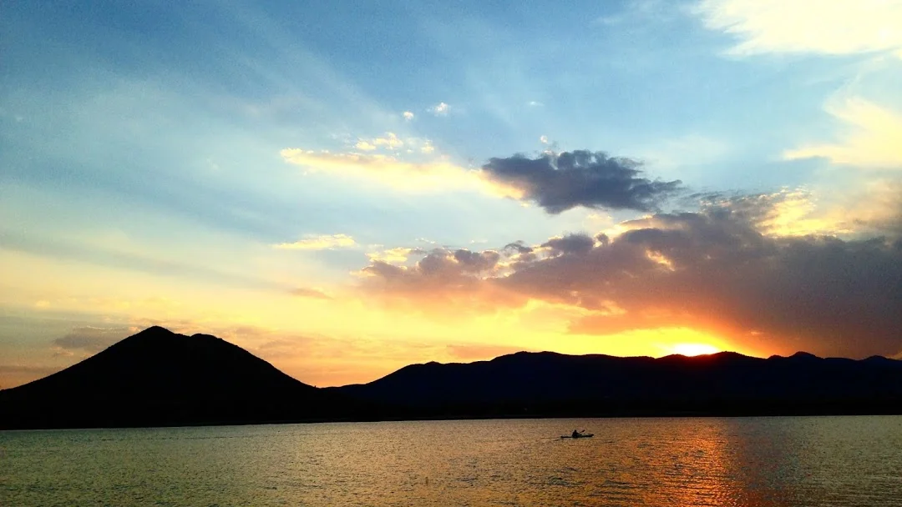
La otra orilla
Tu próxima aventura está a un remo de distancia.
Escríbenos por WhatsAppo llámanos al 720 453 0608